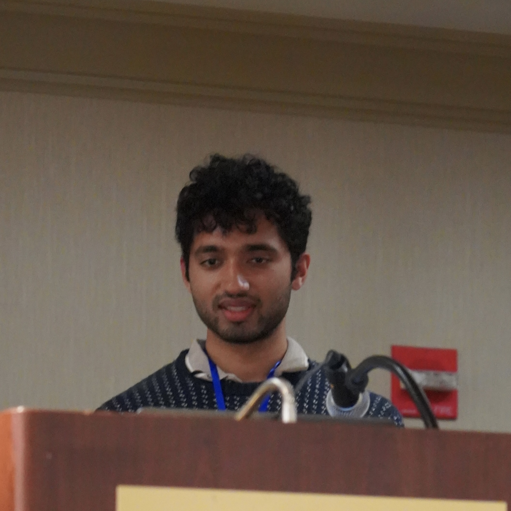
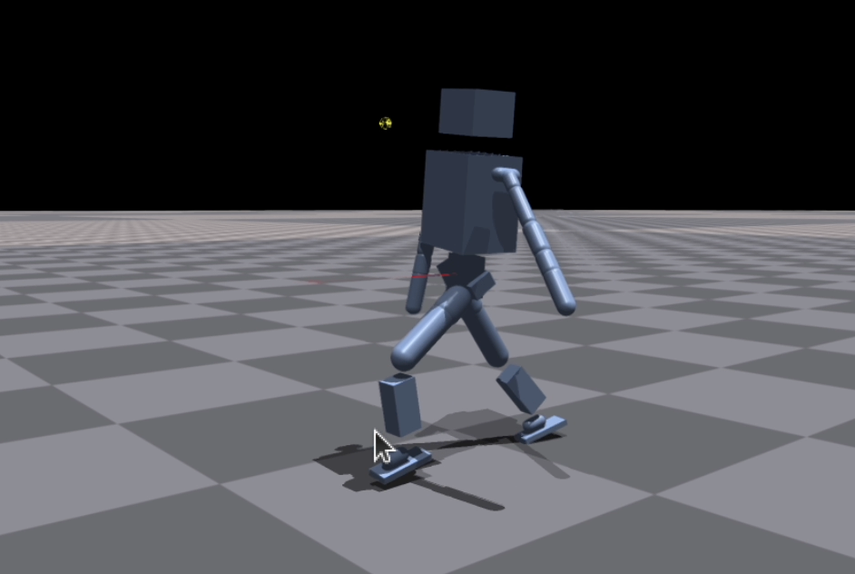
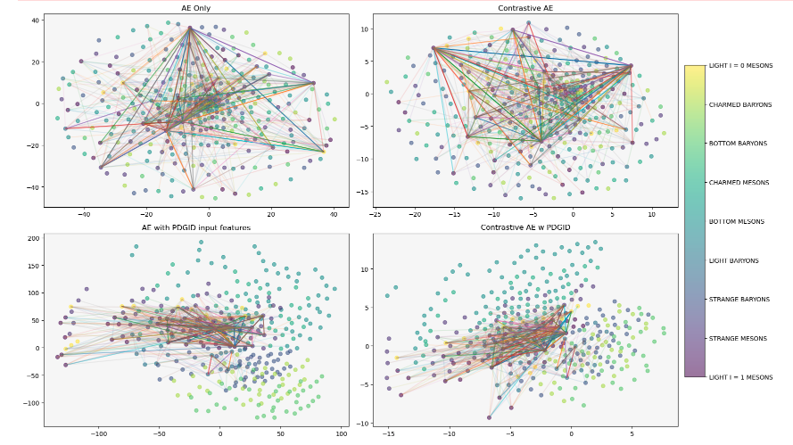
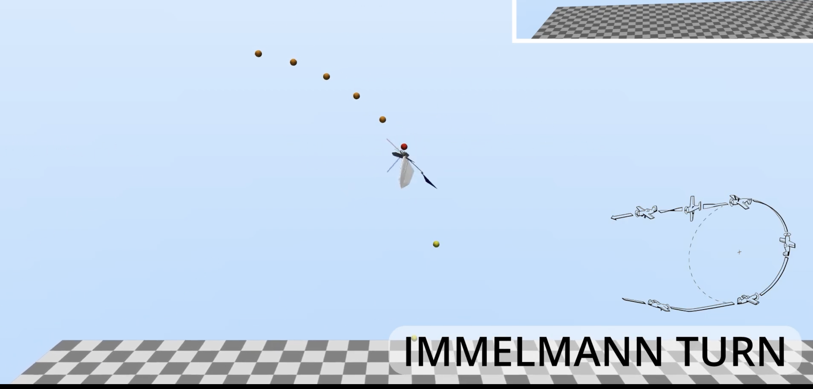
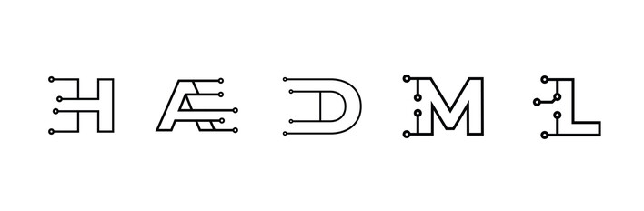

|
Vishnu Sangli I'm a research assisstant at Hybrid Robotics, UC Berkeley led by Prof. Koushil Sreenath. Throughout my meager years of experience I've been an intellectual nomad, exploring fields from Astrobiology and Particle Physics to Robotics and Deep Learning. . I did a thing . |
 |
{kind=link}
Publications and Presentations |
|  |
(In Progress) GenlocoV2: Generalized Multi-Embodiment towards Learning for Locomotion
Vishnu Sangli, Zhongyu Li, Xue Bin Peng, Koushil Sreenath |
|  |
Exploring hadron latent space schemes for fitting hadronization characteristics
Vishnu Sangli, Jay Chan, Xiangyang Ju, Adam Kania, Benjamin Nachman, Andrzej Siódmok arXiv Preprint, 2024 |
|  |
Learning-based Trajectory Tracking for Bird-inspired Flapping-Wing Robots
Jiaze Cai*, Vishnu Sangli*, Mintae Kim, Koushil Sreenath arXiv Preprint, 2024 |
|  |
Integrating Particle Flavor into Deep Learning Models for Hadronization
Jay Chan, Xiangyang Ju, Adam Kania, Benjamin Nachman, Vishnu Sangli, Andrzej Siódmok arXiv Preprint, 2023 |
|
Fitting a Deep Generative Hadronization Model
Jay Chan, Xiangyang Ju, Adam Kania, Benjamin Nachman, Vishnu Sangli, Andrzej Siódmok JHEP, 2023 |
|

|
Precision and fast sampling electrooculogram for recording blinking kinematics
Vishnu Sangli, Sirisha Tadepalli, Chetana Krishnan, V. Thenmozhi, PF. Hadiya, K. Shivaram, A. Anand, Sudhir, RR, Surekha Paneerselvam, SP. Srinivas Oral Presentation at AOPT XVI Biennial Meeting, 2023 |

|
A new approach to Habitability using obliquity and compartmentalised Habitable Zones on planetary surfaces through Vplanet and ROCKE 3D modelling.
Sagarika Valluri, Vishnu Sangli Poster Presentation at AGU Fall Meeting 19, 2019 |
|
|
Habitability Timeline of Venus: Past and Present
Vishnu Sangli Poster Presentation at AbSciCon 19, 2019 |
Miscellanea |
|
Feel free to steal this website's source code. Do not scrape the HTML from this page itself, as it includes analytics tags that you do not want on your own website — use the github code instead. Also, consider using Leonid Keselman's Jekyll fork of this page. |